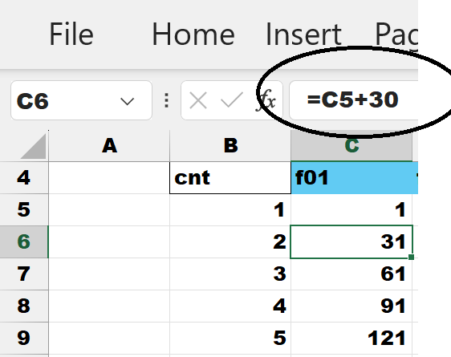
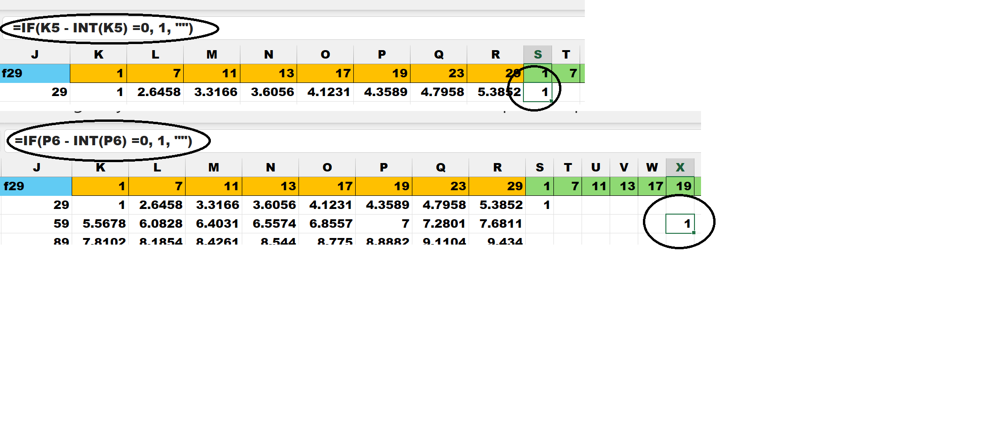
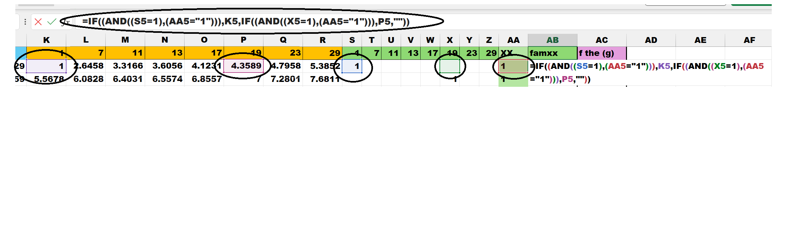
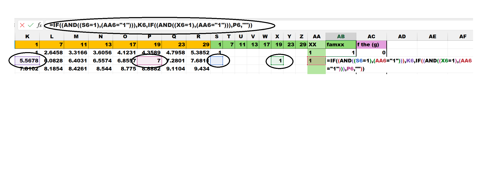

In the next image is the standard data of *fam and each value is 'just another 30 away' from the previous value.
Note column C and the *fam of 'f01' starts at 1 , then 31 , then 61 ; these are all PS values.
Look at each column for each *fam , and it is the same +30.
The formula is shown below:

The next image adds additional columns (gold color) with the square root of its related *fam.
The data values in the "sq roots" columns that are integers have been highlighted alon with their source.
Note the circle highlights showing the formulas and the solution.
The formulas are shown below:
A closer look at the "sq roots" columns shows all the integer values highlighted.
The unique things is the values:
a) All these integers are the initial values from the very start of these web pages for (g)0.
b) Only *fam01 and *fam19 present integer values.
c) All the other *fam square roots are a decmial value.
d) The numbers grow from small (01) to large (29) in order.
e) All the *fam numbers are represented.
*fam01 , *fam07 , *fam11 , *fam13 , *fam17 , *fam19 , *fam23 , *fam29.
f) All the numbers under *fam01 (1) end in 1 of 9.
g) All the numbers under *fam19 (19) end in 3 and 7.
h) These values constitue the *wildcard values of *1 , *3 , *7 , *9 - also from the initial premise . . .
i) We are back to the initial premise of 'just another 30 away' . . .
j) more to come . . .
A closer look at the "sq roots" columns by creating a hit chart , "If there is an integer value show it".
See the green columns and the matching round markers to the square markers.
Mark a hit if an integer. Take the value of the cell and subtract the integer value of the cell , test if = 0 , if zero mark a "1" else mark as empty "". The formulas for the "hit chart" are shown below:

Next , create a 'truth' table in column "AA" ; concantenate all the cell from S5 to Z5 ; then Trim() the blanks.
This creates a unified easy find of all square root integer values. Think of it as a 'join'.
The formulas for "AA" (title XX) are shown below:
Next , find the value that is the square root integer.
In column "AB" (title famxx) show the found integer.
Use the two hits to find the number.
=IF((AND((S5=1),(AA5="1"))),K5,IF((AND((X5=1),(AA5="1"))),P5,""))
So , if (S5=1 & AA5=1) get K5 (under gold 1) else if (X5=1 and AA5=1) get P5 (under gold 19) , else write "" (blank).
The formulas for "AB" are shown below:
Show fam01 find
Show fam19 find

Next , find the (g)
In column "AC" (title f the g)) ; show what (g) the vlaue in column "AB" belongs to.
There are two screen images to show (g)0 and (g)1.
=IF(AB5<>"",INT(AB5/30),"")
So , if AB5 is not blank then , get the integer of AB5 divided by 30 . else write blank.
The formulas for "AC" are shown below: